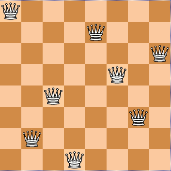
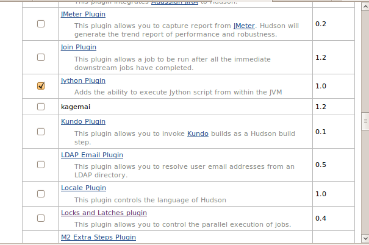
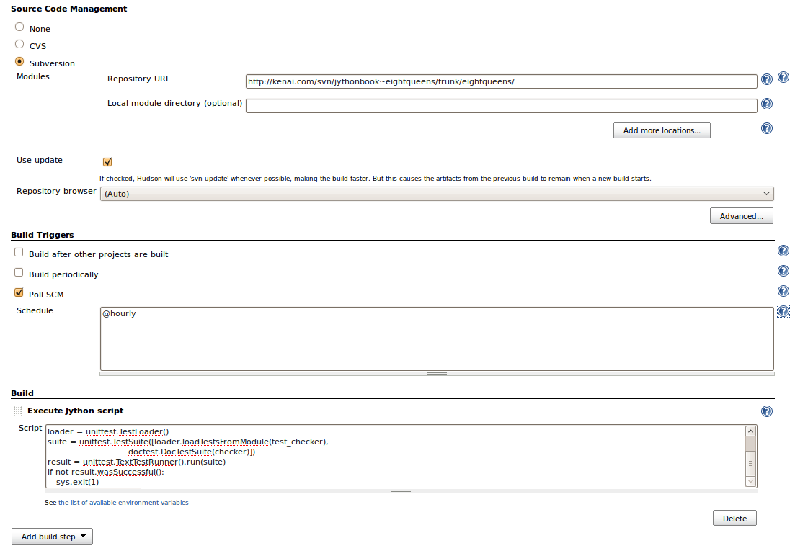
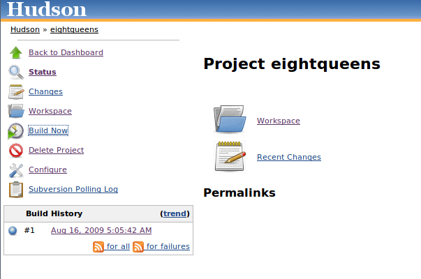
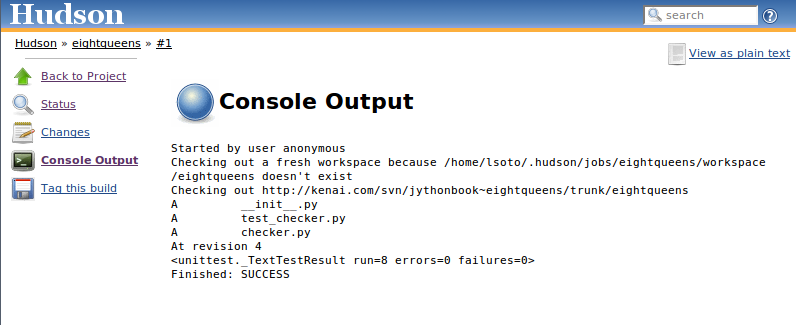
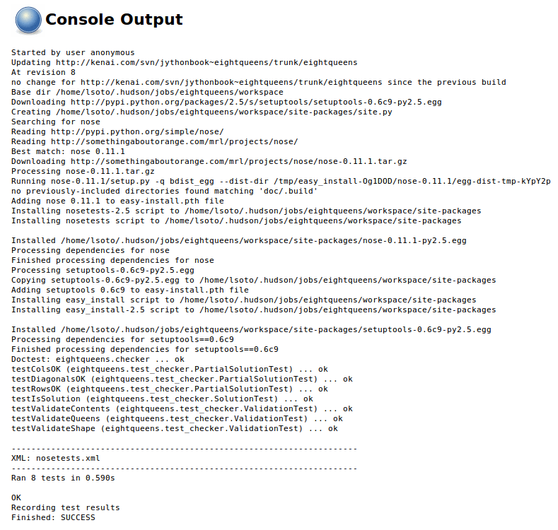
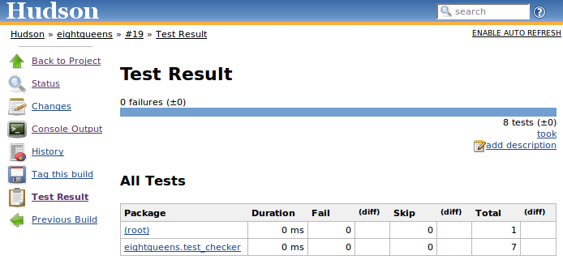
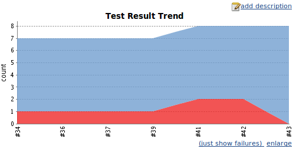
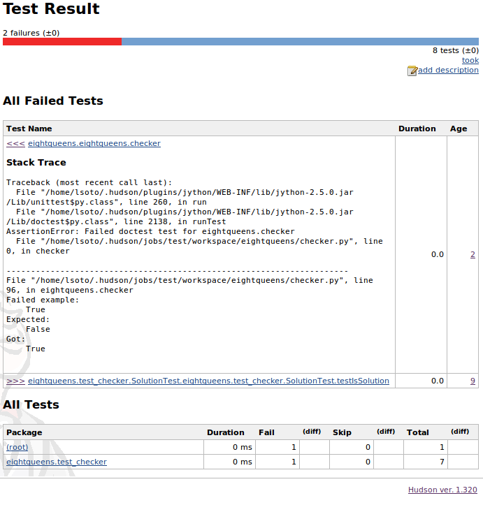

Nowadays, automated testing is a fundamental activity in software development. In this chapter, you will see a survey of the tools available for Jython in this field. These tools range from common tools used in the Python world to aid with unit testing, to more complex tools available in the Java world that can be extended or driven using Jython.
Let’s start the chapter with a discussion of the most common Python testing tools. We will start with UnitTest to get a feel for the process.
First we will take a look at the most classic test tool available in Python: UnitTest. It follows the conventions of most “xUnit” incarnations (such as JUnit); you subclass from class, write test methods (which must have a name starting with “test”), and optionally override the methods and which are executed around the test methods. And you can use the multiple methods provided by . The following is a very simple test case for functions of the built-in math module.
Listing 18-1.
import math
import unittest
class TestMath(unittest.TestCase):
def testFloor(self):
self.assertEqual(1, math.floor(1.01))
self.assertEqual(0, math.floor(0.5))
self.assertEqual(-1, math.floor(-0.5))
self.assertEqual(-2, math.floor(-1.1))
def testCeil(self):
self.assertEqual(2, math.ceil(1.01))
self.assertEqual(1, math.ceil(0.5))
self.assertEqual(0, math.ceil(-0.5))
self.assertEqual(-1, math.ceil(-1.1))
There are many other assertion methods besides , of course. The following lists the rest of the available assertion methods:
As an example, let’s extend our test of mathematical functions using some of these other assertion functions:
Listing 18-2.
import math
import unittest
import operator
class TestMath(unittest.TestCase):
# ...
def testMultiplication(self):
self.assertAlmostEqual(0.3, 0.1 * 3)
def testDivision(self):
self.assertRaises(ZeroDivisionError, operator.div, 1, 0)
# The same assertion using a different idiom:
self.assertRaises(ZeroDivisionError, lambda: 1 / 0)
Now, you may be wondering how to run this test case. The simple answer is to add the following to the file in which we defined it:
if __name__ == '__main__':
unittest.main()
Finally, just run the module. Say, if you wrote all this code on a file named , then run:
$ jython test_math.py
And you will see this output:
....
----------------------------------------------------------------------
Ran 4 tests in 0.005s
OK
Each dot before the dash line represents a successfully run test. Let’s see what happens if we add a test that fails. Change the invocation method in to use instead. If you run the module again, you will see the following output:
Listing 18-3.
...F
======================================================================
FAIL: testMultiplication (__main__.TestMath)
----------------------------------------------------------------------
Traceback (most recent call last):
File "test_math.py", line 22, in testMultiplication
self.assertEqual(0.3, 0.1 * 3)
AssertionError: 0.3 != 0.30000000000000004
----------------------------------------------------------------------
Ran 4 tests in 0.030s
FAILED (failures=1)
As you can see, the last dot is now an “F,” and an explanation of the failure is printed, pointing out that and are not equal. The last line also shows the grand total of 1 failure.
By the way, now you can imagine why using is better than : if the test fails, provides helpful information, which can’t possibly provide by itself. To see this in action, let’s change to use :
class TestMath(unittest.TestCase):
#...
def testMultiplication(self):
self.assert_(0.3 == 0.1 * 3)
If you run the test again, the output will be:
...F
======================================================================
FAIL: testMultiplication (__main__.TestMath)
----------------------------------------------------------------------
Traceback (most recent call last):
File "test_math.py", line 24, in testMultiplication
self.assert_(0.3 == 0.1 * 3)
AssertionError
----------------------------------------------------------------------
Ran 4 tests in 0.054s
FAILED (failures=1)
Now all that we have is the and the message. No extra information is provided to help us diagnose the failure, as was the case when we used . That’s why all the specialized methods are so helpful. Actually, with the exception of , all assertion methods accept an extra parameter meant to be the debugging message, which will be shown in case the test fails. That lets you write helper methods such as:
Listing 18-4.
class SomeTestCase(unittest.TestCase):
def assertGreaterThan(a, b):
self.assert_(a > b, '%d isn't greater than %d')
def testSomething(self):
self.assertGreaterThan(10, 4)
As your application gets bigger, the number of test cases will grow, too. Eventually, you may not want to keep all the tests in one Python module, for maintainability reasons. Let’s create a new module named with the following test code:
Listing 18-5.
import unittest
class TestLists(unittest.TestCase):
def setUp(self):
self.list = ['foo', 'bar', 'baz']
def testLen(self):
self.assertEqual(3, len(self.list))
def testContains(self):
self.assert_('foo' in self.list)
self.assert_('bar' in self.list)
self.assert_('baz' in self.list)
def testSort(self):
self.assertNotEqual(['bar', 'baz', 'foo'], self.list)
self.list.sort()
self.assertEqual(['bar', 'baz', 'foo'], self.list)
Note
In the previous code, you can see an example of a method, which allows us to avoid repeating the same initialization code on each method. The method is executed once before every test. Similarly, the method is executed once after each test to perform cleanup activities.
And, restoring our math tests to a good state, the will contain the following:
Listing 18-6.
import math
import unittest
import operator
class TestMath(unittest.TestCase):
def testFloor(self):
self.assertEqual(1, math.floor(1.01))
self.assertEqual(0, math.floor(0.5))
self.assertEqual(-1, math.floor(-0.5))
self.assertEqual(-2, math.floor(-1.1))
def testCeil(self):
self.assertEqual(2, math.ceil(1.01))
self.assertEqual(1, math.ceil(0.5))
self.assertEqual(0, math.ceil(-0.5))
self.assertEqual(-1, math.ceil(-1.1))
def testDivision(self):
self.assertRaises(ZeroDivisionError, operator.div, 1, 0)
# The same assertion using a different idiom:
self.assertRaises(ZeroDivisionError, lambda: 1 / 0)
def testMultiplication(self):
self.assertAlmostEqual(0.3, 0.1 * 3)
Now, how do we run, in one pass, tests defined in different modules? One option is to manually build a None. A test suite is simply a collection of test cases (and/or other test suites) which, when run, will run all the test cases (and/or test suites) contained by it. Note that a new test case instance is built for each test method, so suites have already been built under the hood every time you have run a test module. Our work, then, is to “paste” the suites together.
Let’s build suites using the interactive interpreter. First, import the involved modules:
Listing 18-7.
>>> import unittest, test_math, test_lists
Then, obtain the test suites for each one of our test modules (which were implicitly created when running them using the shortcut), using the class:
Listing 18-8.
>>> loader = unittest.TestLoader()
>>> math_suite = loader.loadTestsFromModule(test_math)
>>> lists_suite = loader.loadTestsFromModule(test_lists)
Now we build a new suite, which combines these suites:
>>> global_suite = unittest.TestSuite([math_suite, lists_suite])
And finally, we run the suite:
>>> unittest.TextTestRunner().run(global_suite)
.......
----------------------------------------------------------------------
Ran 7 tests in 0.010s
OK
<unittest._TextTestResult run=7 errors=0 failures=0>
Or, if you want a more verbose output:
>>> unittest.TextTestRunner(verbosity=2).run(global_suite)
testCeil (test_math.TestMath) ... ok
testDivision (test_math.TestMath) ... ok
testFloor (test_math.TestMath) ... ok
testMultiplication (test_math.TestMath) ... ok
testContains (test_lists.TestLists) ... ok
testLen (test_lists.TestLists) ... ok
testSort (test_lists.TestLists) ... ok
----------------------------------------------------------------------
Ran 7 tests in 0.020s
OK
<unittest._TextTestResult run=7 errors=0 failures=0>
Using this low-level knowledge about loaders, suites, and runners, you can easily write a script to run the tests of any project. Obviously, the details of the script will vary from project to project, depending on the way in which you decide to organize your tests. There are a number of other features that are included with the unittest framework. For more detailed information, please refer to the Python documentation.
On the other hand, you won’t typically write custom scripts to run all your tests. Using test tools that do automatic test discovery is a much more convenient approach. We will look at one of them shortly. But first, we must show you another testing tool that is very popular in the Python world: doctests.
Doctests are an ingenious combination of, well, documentation and tests. A doctest is, in essence, no more than a snapshot of an interactive interpreter session, mixed with paragraphs of documentation, typically inside of a docstring. Here is a simple example:
Listing 18-9.
def is_even(number):
"""
Checks if an integer number is even.
>>> is_even(0)
True
>>> is_even(2)
True
>>> is_even(3)
False
It works with very long numbers:
>>> is_even(100000000000000000000000000000)
True
And also with negatives:
>>> is_even(-1000000000000000000000000000001)
False
But not with floats:
>>> is_even(4.1)
Traceback (most recent call last):
...
ValueError: 4.1 isn't an integer
However, a value of type float will work as long as is an integer:
>>> is_even(4.0)
True
"""
remainder = number % 2
if 0 < remainder < 1:
raise ValueError("%f isn't an integer" % number)
return remainder == 0
Note that, if we weren’t talking about testing, we may have thought that the docstring of is just normal documentation, in which the convention of using the interpreter prompt to mark example expressions and their outputs was adopted. After all, in many cases we use examples as part of the documentation. Take a look at Java’s documentation, located in java.sun.com/javase/6/docs/api/java/text/SimpleDateFormat.html, and you will spot fragments like:
The magic of doctests is that it encourages the inclusion of these examples by doubling them as tests. Let’s save our example code as and add the following snippet at the end:
Listing 18-10.
if __name__ == "__main__":
import doctest
doctest.testmod()
Then, run it:
$ jython even.py
Doctests are a bit shy and don’t show any output on success. But to convince you that it is indeed testing our code, run it with the option:
$ jython even.py -v
Trying:
is_even(0)
Expecting:
True
ok
Trying:
is_even(2)
Expecting:
True
ok
Trying:
is_even(3)
Expecting:
False
ok
Trying:
is_even(100000000000000000000000000000)
Expecting:
True
ok
Trying:
is_even(-1000000000000000000000000000001)
Expecting:
False
ok
Trying:
is_even(4.1)
Expecting:
Traceback (most recent call last):
...
ValueError: 4.1 isn't an integer
ok
Trying:
is_even(4.0)
Expecting:
True
ok
1 items had no tests:
__main__
1 items passed all tests:
7 tests in __main__.is_even
7 tests in 2 items.
7 passed and 0 failed.
Test passed.
Doctests are a very, very convenient way to do testing, because the interactive examples can be directly copied and pasted from the interactive shell, transforming the manual testing in documentation examples and automated tests in one shot.
You don’t really None to include doctests as part of the documentation of the feature they test. Nothing stops you from writing the following code in, say, the module:
Listing 18-11.
"""
Doctests equivalent to test_math unittests seen in the previous section.
>>> import math
Tests for floor():
>>> math.floor(1.01)
1
>>> math.floor(0.5)
0
>>> math.floor(-0.5)
-1
>>> math.floor(-1.1)
-2
Tests for ceil():
>>> math.ceil(1.01)
2
>>> math.ceil(0.5)
1
>>> math.ceil(-0.5)
0
>>> math.ceil(-1.1)
-1
Test for division:
>>> 1 / 0
Traceback (most recent call last):
...
ZeroDivisionError: integer division or modulo by zero
Test for floating point multiplication:
>>> (0.3 - 0.1 * 3) < 0.0000001
True
"""
if __name__ == "__main__":
import doctest
doctest.testmod()
Something to note about the last test in the previous example is that, in some cases, doctests are not the cleanest way to express a test. Also note that, if that test fails, you will None get useful information about the failure. It will tell you that the output was when was expected, without the extra details that would give you. The moral of the story is to realize that doctest is just another tool in the toolbox, which can fit very well in some cases, but not in others.
Note
Speaking of doctests gotchas: the use of dictionary outputs in doctests is a very common error that breaks the portability of your doctests across Python implementations (for example, Jython, CPython, and IronPython). The trap here is that the order of dict keys is implementation-dependent, so the test may pass when working on some implementation and fail horribly on others. The workaround is to convert the dict to a sequence of tuples and sort them, using sorted(mydict.items()).That shows the big downfall of doctests: it always does a textual comparison of the expression, converting the result to string. It isn’t aware of the objects structure.
To take advantage of doctests, we have to follow some simple rules, like using the prompt and leaving a blank line between sample output and the next paragraph. But if you think about it, it’s the same kind of sane rules that makes the documentation readable by people.
The only common rule not illustrated by the examples in this section is the way to write expressions that are written on more than one line. As you may expect, you have to follow the same convention used by the interactive interpreter: start the continuation lines with an ellipsis (...). For example:
Listing 18-12.
"""
Addition is commutative:
>>> ((1 + 2) ==
... (2 + 1))
True
"""
Having seen the two test frameworks used in the Python world, let’s see them applied to a more meaningful program. We will write code to check for solutions of the eight-queens chess puzzle. The idea of the puzzle is to place eight queens in a chessboard, with no queen attacking each other. Queens can attack any piece placed in the same row, column or diagonals. Figure 18-1 shows one of the solutions of the puzzle.

**Figure 18-1. **Eight queens chess
We like to use doctests to check the contract of the program with the outside, and unittest for what we could see as the internal tests. We do that because external interfaces tend to be clearly documented, and automated testing of the examples in the documentation is always a great thing. On the other hand, unittests shine on pointing us to the very specific source of a bug, or at the very least on providing more useful debugging information than doctests.
Note
In practice, both types of tests have strengths and weaknesses, and you may find some cases in which you will prefer the readability and simplicity of doctests and only use them on your project. Or you will favor the granularity and isolation of unittests and only use them on your project. As with many things in life, it’s a trade-off.
We’ll develop this program in a test-driven development fashion. The tests will be written first, as a sort of specification for our program, and code will be written later to fulfill the tests’ requirements.
Let’s start by specifying the public interface of our puzzle checker, which will live on the package. This is the start of the main module, :
Listing 18-13.
"""
eightqueen.checker: Validates solutions for the eight queens puzzle.
Provides the function is_solution(board) to determine if a board represents a
valid solution of the puzzle.
The chess board is represented by list of 8 strings, each string of length
8. Positions occupied by a Queen are marked by the character 'Q', and empty
spaces are represented by an space character.
Here is a valid board:
>>> board = [
... 'Q ',
... ' Q ',
... ' Q ',
... ' Q ',
... ' Q ',
... ' Q ',
... ' Q ',
... ' Q']
Naturally, it is not a correct solution:
>>> is_solution(board)
False
Here is a correct solution:
>>> is_solution([
... 'Q ',
... ' Q ',
... ' Q',
... ' Q ',
... ' Q ',
... ' Q ',
... ' Q ',
... ' Q '])
True
Malformed boards are rejected and a ValueError is thrown:
>>> is_solution([])
Traceback (most recent call last):
...
ValueError: Malformed board
Only 8 x 8 boards are supported.
>>> is_solution([
... 'Q ',
... ' Q ',
... ' Q ',
... ' Q'])
Traceback (most recent call last):
...
ValueError: Malformed board
And they must only contains Qs and spaces:
>>> is_solution([
... 'X ',
... ' X ',
... ' X',
... ' X ',
... ' X ',
... ' X ',
... ' X ',
... ' X '])
Traceback (most recent call last):
...
ValueError: Malformed board
And the total number of Qs must be eight:
>>> is_solution([
... 'QQQQQQQQ',
... 'Q ',
... ' ',
... ' ',
... ' ',
... ' ',
... ' ',
... ' '])
Traceback (most recent call last):
...
ValueError: There must be exactly 8 queens in the board
>>> is_solution([
... 'QQQQQQQ ',
... ' ',
... ' ',
... ' ',
... ' ',
... ' ',
... ' ',
... ' '])
Traceback (most recent call last):
...
ValueError: There must be exactly 8 queens in the board
"""
That’s a good start; we know what we have to build. The doctests play the role of a more precise problem statement. Actually, it’s an executable problem statement that can be used to verify our solution to the problem.
Now we will specify the “internal” interface that shows how we can solve the problem of writing the solution checker. It’s common practice to write the unittests on a separate module. So here is the code for :
Listing 18-14.
import unittest
from eightqueens import checker
BOARD_TOO_SMALL = ['Q' * 3 for i in range(3)]
BOARD_TOO_BIG = ['Q' * 10 for i in range(10)]
BOARD_WITH_TOO_MANY_COLS = ['Q' * 9 for i in range(8)]
BOARD_WITH_TOO_MANY_ROWS = ['Q' * 8 for i in range(9)]
BOARD_FULL_OF_QS = ['Q' * 8 for i in range(8)]
BOARD_FULL_OF_CRAP = [chr(65 + i) * 8 for i in range(8)]
BOARD_EMPTY = [' ' * 8 for i in range(8)]
BOARD_WITH_QS_IN_THE_SAME_ROW = [
'Q Q ',
' ',
' Q',
' Q ',
' Q ',
' Q ',
' Q ',
' Q ']
BOARD_WITH_WRONG_SOLUTION = BOARD_WITH_QS_IN_THE_SAME_ROW
BOARD_WITH_QS_IN_THE_SAME_COL = [
'Q ',
' Q ',
' Q',
'Q ',
' Q ',
' Q ',
' Q ',
' Q ']
BOARD_WITH_QS_IN_THE_SAME_DIAG_1 = [
' ',
' ',
' ',
' ',
' ',
' ',
'Q ',
' Q ']
BOARD_WITH_QS_IN_THE_SAME_DIAG_2 = [
' ',
' Q ',
' ',
' Q ',
' ',
' ',
' ',
' ']
BOARD_WITH_QS_IN_THE_SAME_DIAG_3 = [
' ',
' Q ',
' ',
' ',
' ',
' Q ',
' ',
' ']
BOARD_WITH_QS_IN_THE_SAME_DIAG_4 = [
' ',
' Q ',
' ',
' ',
' ',
'Q ',
' ',
' ']
BOARD_WITH_QS_IN_THE_SAME_DIAG_5 = [
' Q',
' Q ',
' Q ',
' Q ',
' Q ',
' Q ',
' Q ',
'Q ']
BOARD_WITH_SOLUTION = [
'Q ',
' Q ',
' Q',
' Q ',
' Q ',
' Q ',
' Q ',
' Q ']
class ValidationTest(unittest.TestCase):
def testValidateShape(self):
def assertNotValidShape(board):
self.assertFalse(checker._validate_shape(board))
# Some invalid shapes:
assertNotValidShape([])
assertNotValidShape(BOARD_TOO_SMALL)
assertNotValidShape(BOARD_TOO_BIG)
assertNotValidShape(BOARD_WITH_TOO_MANY_COLS)
assertNotValidShape(BOARD_WITH_TOO_MANY_ROWS)
def assertValidShape(board):
self.assert_(checker._validate_shape(board))
assertValidShape(BOARD_WITH_SOLUTION)
# Shape validation doesn't care about board contents:
assertValidShape(BOARD_FULL_OF_QS)
assertValidShape(BOARD_FULL_OF_CRAP)
def testValidateContents(self):
# Valid content => only 'Q' and ' ' in the board
self.assertFalse(checker._validate_contents(BOARD_FULL_OF_CRAP))
self.assert_(checker._validate_contents(BOARD_WITH_SOLUTION))
# Content validation doesn't care about the number of queens:
self.assert_(checker._validate_contents(BOARD_FULL_OF_QS))
def testValidateQueens(self):
self.assertFalse(checker._validate_queens(BOARD_FULL_OF_QS))
self.assertFalse(checker._validate_queens(BOARD_EMPTY))
self.assert_(checker._validate_queens(BOARD_WITH_SOLUTION))
self.assert_(checker._validate_queens(BOARD_WITH_WRONG_SOLUTION))
class PartialSolutionTest(unittest.TestCase):
def testRowsOK(self):
self.assert_(checker._rows_ok(BOARD_WITH_SOLUTION))
self.assertFalse(checker._rows_ok(BOARD_WITH_QS_IN_THE_SAME_ROW))
def testColsOK(self):
self.assert_(checker._cols_ok(BOARD_WITH_SOLUTION))
self.assertFalse(checker._cols_ok(BOARD_WITH_QS_IN_THE_SAME_COL))
def testDiagonalsOK(self):
self.assert_(checker._diagonals_ok(BOARD_WITH_SOLUTION))
self.assertFalse(
checker._diagonals_ok(BOARD_WITH_QS_IN_THE_SAME_DIAG_1))
self.assertFalse(
checker._diagonals_ok(BOARD_WITH_QS_IN_THE_SAME_DIAG_2))
self.assertFalse(
checker._diagonals_ok(BOARD_WITH_QS_IN_THE_SAME_DIAG_3))
self.assertFalse(
checker._diagonals_ok(BOARD_WITH_QS_IN_THE_SAME_DIAG_4))
self.assertFalse(
checker._diagonals_ok(BOARD_WITH_QS_IN_THE_SAME_DIAG_5))
class SolutionTest(unittest.TestCase):
def testIsSolution(self):
self.assert_(checker.is_solution(BOARD_WITH_SOLUTION))
self.assertFalse(checker.is_solution(BOARD_WITH_QS_IN_THE_SAME_COL))
self.assertFalse(checker.is_solution(BOARD_WITH_QS_IN_THE_SAME_ROW))
self.assertFalse(checker.is_solution(BOARD_WITH_QS_IN_THE_SAME_DIAG_5))
self.assertRaises(ValueError, checker.is_solution, BOARD_TOO_SMALL)
self.assertRaises(ValueError, checker.is_solution, BOARD_FULL_OF_CRAP)
self.assertRaises(ValueError, checker.is_solution, BOARD_EMPTY)
These unittests propose a way to solve the problem, decomposing it in two big tasks (input validation and the actual verification of solutions), and each task is decomposed on a smaller portion that is meant to be implemented by a function. In some way, they are an executable design of the solution.
So we have a mix of doctests and unittests. How do we run all of them in one shot? Previously we showed you how to manually compose a test suite for unit tests belonging to different modules, so that may be an answer. And indeed, there is a way to add doctests to test suites: . But, because we are working on a more “real” testing example, we will use a real-world solution to this problem (as you can imagine, people got tired of the tedious work and more automated solutions appeared).
Nose is a tool for test discovery and execution. By default, Nose tries to run tests on any module whose name starts with “test.” You can override that, of course. In our case, the example code of the previous section follows the convention (the test module is named ).
An easy way to install Nose is via setuptools. If you have not yet installed setuptools, please see Appendix A for details on doing so. Once you have setuptools installed, you can proceed to install Nose:
Listing 18-15.
$ easy_install nose
Once Nose is installed, an executable named will appear on the bin/ directory of your Jython installation. Let’s try it, locating ourselves on the parent directory of and running:
Listing 18-16.
$ nosetests --with-doctest
By default, Nose does None run doctests, so we have to explicitly enable the doctest plug-in that comes built in with Nose.
Back to our example, here is the shortened output after running Nose:
Listing 18-17.
FEEEEEE
[Snipped output]
----------------------------------------------------------------------
Ran 8 tests in 1.133s
FAILED (errors=7, failures=1)
Of course, all of our tests (7 unittests and 1 doctest) failed. It’s time to fix that. But first, let’s run Nose again, None the doctests, because we will follow the unittests to construct the solution. And we know that as long as our unittests fail, the doctest will also likely fail. Once all unittests pass, we can check our whole program against the high level doctest and see if we missed something or did it right. Here is the Nose output for the unittests:
Listing 18-18.
$ nosetests
EEEEEEE
======================================================================
ERROR: testIsSolution (eightqueens.test_checker.SolutionTest)
----------------------------------------------------------------------
Traceback (most recent call last):
File "/path/to/eightqueens/test_checker.py", line 149, in testIsSolution
self.assert_(checker.is_solution(BOARD_WITH_SOLUTION))
AttributeError: 'module' object has no attribute 'is_solution'
======================================================================
ERROR: testColsOK (eightqueens.test_checker.PartialSolutionTest)
----------------------------------------------------------------------
Traceback (most recent call last):
File "/path/to/eightqueens/test_checker.py", line 100, in testColsOK
self.assert_(checker._cols_ok(BOARD_WITH_SOLUTION))
AttributeError: 'module' object has no attribute '_cols_ok'
======================================================================
ERROR: testDiagonalsOK (eightqueens.test_checker.PartialSolutionTest)
----------------------------------------------------------------------
Traceback (most recent call last):
File "/path/to/eightqueens/test_checker.py", line 104, in testDiagonalsOK
self.assert_(checker._diagonals_ok(BOARD_WITH_SOLUTION))
AttributeError: 'module' object has no attribute '_diagonals_ok'
======================================================================
ERROR: testRowsOK (eightqueens.test_checker.PartialSolutionTest)
----------------------------------------------------------------------
Traceback (most recent call last):
File "/path/to/eightqueens/test_checker.py", line 96, in testRowsOK
self.assert_(checker._rows_ok(BOARD_WITH_SOLUTION))
AttributeError: 'module' object has no attribute '_rows_ok'
======================================================================
ERROR: testValidateContents (eightqueens.test_checker.ValidationTest)
----------------------------------------------------------------------
Traceback (most recent call last):
File "/path/to/eightqueens/test_checker.py", line 81, in testValidateContents
self.assertFalse(checker._validate_contents(BOARD_FULL_OF_CRAP))
AttributeError: 'module' object has no attribute '_validate_contents'
======================================================================
ERROR: testValidateQueens (eightqueens.test_checker.ValidationTest)
----------------------------------------------------------------------
Traceback (most recent call last):
File "/path/to/eightqueens/test_checker.py", line 88, in testValidateQueens
self.assertFalse(checker._validate_queens(BOARD_FULL_OF_QS))
AttributeError: 'module' object has no attribute '_validate_queens'
======================================================================
ERROR: testValidateShape (eightqueens.test_checker.ValidationTest)
----------------------------------------------------------------------
Traceback (most recent call last):
File "/path/to/eightqueens/test_checker.py", line 65, in testValidateShape
assertNotValidShape([])
File "/path/to/eightqueens/test_checker.py", line 62, in assertNotValidShape
self.assertFalse(checker._validate_shape(board))
AttributeError: 'module' object has no attribute '_validate_shape'
----------------------------------------------------------------------
Ran 7 tests in 0.493s
FAILED (errors=7)
Let’s start clearing the failures by coding the validation functions specified by the . That is, the , , and _ functions, in the module:
def _validate_shape(board):
return (board and
len(board) == 8 and
all(len(row) == 8 for row in board))
def _validate_contents(board):
for row in board:
for square in row:
if square not in ('Q', ' '):
return False
return True
def _count_queens(row):
n = 0
for square in row:
if square == 'Q':
n += 1
return n
def _validate_queens(board):
n = 0
for row in board:
n += _count_queens(row)
return n == 8
And now run Nose again:
$ nosetests
EEEE...
======================================================================
ERROR: testIsSolution (eightqueens.test_checker.SolutionTest)
----------------------------------------------------------------------
Traceback (most recent call last):
File "/path/to/eightqueens/test_checker.py", line 149, in testIsSolution
self.assert_(checker.is_solution(BOARD_WITH_SOLUTION))
AttributeError: 'module' object has no attribute 'is_solution'
======================================================================
ERROR: testColsOK (eightqueens.test_checker.PartialSolutionTest)
----------------------------------------------------------------------
Traceback (most recent call last):
File "/path/to/eightqueens/test_checker.py", line 100, in testColsOK
self.assert_(checker._cols_ok(BOARD_WITH_SOLUTION))
AttributeError: 'module' object has no attribute '_cols_ok'
======================================================================
ERROR: testDiagonalsOK (eightqueens.test_checker.PartialSolutionTest)
----------------------------------------------------------------------
Traceback (most recent call last):
File "/path/to/eightqueens/test_checker.py", line 104, in testDiagonalsOK
self.assert_(checker._diagonals_ok(BOARD_WITH_SOLUTION))
AttributeError: 'module' object has no attribute '_diagonals_ok'
======================================================================
ERROR: testRowsOK (eightqueens.test_checker.PartialSolutionTest)
----------------------------------------------------------------------
Traceback (most recent call last):
File "/path/to/eightqueens/test_checker.py", line 96, in testRowsOK
self.assert_(checker._rows_ok(BOARD_WITH_SOLUTION))
AttributeError: 'module' object has no attribute '_rows_ok'
----------------------------------------------------------------------
Ran 7 tests in 0.534s
FAILED (errors=4)
We passed all the validation tests! Now we should implement the functions , , and , to pass :
def _scan_ok(board, coordinates):
queen_already_found = False
for i, j in coordinates:
if board[i][j] == 'Q':
if queen_already_found:
return False
else:
queen_already_found = True
return True
def _rows_ok(board):
for i in range(8):
if not _scan_ok(board, [(i, j) for j in range(8)]):
return False
return True
def _cols_ok(board):
for j in range(8):
if not _scan_ok(board, [(i, j) for i in range(8)]):
return False
return True
def _diagonals_ok(board):
for k in range(8):
# Diagonal: (0, k), (1, k + 1), ..., (7 - k, 7)...
if not _scan_ok(board, [(i, k + i) for i in range(8 - k)]):
return False
# Diagonal: (k, 0), (k + 1, 1), ..., (7, 7 - k)
if not _scan_ok(board, [(k + j, j) for j in range(8 - k)]):
return False
# Diagonal: (0, k), (1, k - 1), ..., (k, 0)
if not _scan_ok(board, [(i, k - i) for i in range(k + 1)]):
return False
# Diagonal: (7, k), (6, k - 1), ..., (k, 7)
if not _scan_ok(board, [(7 - j, k + j) for j in range(8 - k)]):
return False
return True
Let’s try Nose again:
Listing 18-19.
$ nosetests
...E...
======================================================================
ERROR: testIsSolution (eightqueens.test_checker.SolutionTest)
----------------------------------------------------------------------
Traceback (most recent call last):
File "/path/to/eightqueens/test_checker.py", line 149, in testIsSolution
self.assert_(checker.is_solution(BOARD_WITH_SOLUTION))
AttributeError: 'module' object has no attribute 'is_solution'
----------------------------------------------------------------------
Ran 7 tests in 0.938s
FAILED (errors=1)
Finally, we have to assemble the pieces together to pass the test for :
def is_solution(board):
if not _validate_shape(board) or not _validate_contents(board):
raise ValueError("Malformed board")
if not _validate_queens(board):
raise ValueError("There must be exactly 8 queens in the board")
return _rows_ok(board) and _cols_ok(board) and _diagonals_ok(board)
And we can hope that all test pass now:
$ nosetests
.......
----------------------------------------------------------------------
Ran 7 tests in 0.592s
OK
Indeed, they all pass. Moreover, we probably also pass the “problem statement,” test, expressed in our doctest:
$ nosetests --with-doctest
........
----------------------------------------------------------------------
Ran 8 tests in 1.523s
OK
Objective accomplished! We have come up with a nicely documented and tested module, using the two testing tools shipped with the Python language, and Nose to run all our tests without manually building suites. For more information on Nose, please see the documentation available at the project web site: code.google.com/p/python-nose/.
You may be wondering how to integrate the testing frameworks of Python and Java. It is possible to write JUnit tests in Jython, but it’s not really interesting, considering that you can test Java classes using unittest and doctest. The following is a perfectly valid doctest:
Listing 18-20.
"""
Tests for Java's DecimalFormat
>>> from java.text import DecimalFormat
A format for money:
>>> dolarFormat = DecimalFormat("$ ###,###.##")
The decimal part is only printed if needed:
>>> dolarFormat.format(1000)
u'$ 1.000'
Rounding is used when there are more decimal numbers than those defined by the
format:
>>> dolarFormat.format(123456.789)
u'$ 123.456,79'
The format can be used as a parser:
>>> dolarFormat.parse('$ 123')
123L
The parser ignores the unparseable text after the number:
>>> dolarFormat.parse("$ 123abcd")
123L
However, if it can't parse a number, it throws a ParseException:
>>> dolarFormat.parse("abcd")
Traceback (most recent call last):
...
ParseException: java.text.ParseException: Unparseable number: "abcd"
"""
So you can use all that you learned in this chapter to test code written in Java. We find this a very powerful tool for Java development: easy, flexible, and unceremonious testing using Jython and Python testing tools!
Martin Fowler defines continuous integration as “a software development practice where members of a team integrate their work frequently [...]. Each integration is verified by an automated build (including test) to detect integration errors as quickly as possible.” Some software development teams report to have used this practice as early as the 1960s; however, it only became mainstream when advocated as part of the extreme programming practices. Nowadays, it is a widely applied practice, and in the Java world there is a wealth of tools to help with the technical challenge involved by it.
One tool that currently has a lot of momentum and is growing an important user base is Hudson. Among its prominent features are the ease of installation and configuration, and the ability to deploy it in a distributed, master/slaves environment for cross-platform testing.
But we think Hudson’s main strength is its highly modular, plug-in-based architecture, which has resulted in the creation of plug-ins to support most of the version control, build and reporting tools, and many languages. One of them is the Jython plug-in, which allows you to use the Python language to drive your builds.
You can find more details about the Hudson project at its homepage at hudson.dev.java.net.
Grab the latest version of Hudson from hudson-ci.org/latest/hudson.war. You can deploy it to any servlet container, such as Tomcat or Glassfish. But one of the cool features of Hudson is that you can test it by simply running:
Listing 18-21.
$ java -jar hudson.war
After a few seconds, you will see some logging output on the console, and Hudson will be up and running. If you visit the site localhost:8080 you will get a welcome page inviting you to start using Hudson creating new jobs.
Note
WARNING The default mode of operation of Hudson fully trusts its users, letting them execute any command they want on the server, with the privileges of the user running Hudson. You can set stricter access control policies on the Configure System section of the Manage Hudson page.
Before creating jobs, we will install the Jython plug-in. Click on the Manage Hudson link on the left-hand menu. Then click Manage Plug-ins. Now go to the Available tab. You will see a very long list of plug-ins (we told you this was the greatest Hudson strength!) Find the Jython Plug-in, click on the checkbox at its left (as shown in Figure 18-2), then scroll to the end of the page and click the Install button.

**Figure 18-2. **Selecting the Jython Plug-in
You will see a bar showing the progress of the download and installation, and after little while you will be presented with a screen like that shown in Figure 18-3, notifying you that the process has finished. Press the Restart button, wait a little bit, and you will see the welcome screen again. Congratulations, you now have a Jython-powered Hudson!
Let’s now follow the suggestion of the welcome screen and click the Create New Job link. A job roughly corresponds to the instructions needed by Hudson to build a project. It includes:
After clicking the Create New Job link (the equivalent to the New Job entry on the left-hand menu), you will be asked for a name and type for the job. We will use the project built on the previous section, so name the project “eightqueens”, select the “Build a free-style software project” option, and press the OK button.
In the next screen, we need to set up an option on the Source Code Management section. You may want to experiment with your own repositories here (by default only CVS and Subversion are supported, but there are plug-ins for all the other VCSs used out there). For our example, we’ve hosted the code on a Subversion repository at: kenai.com/svn/jythonbook~eightqueens. So select Subversion and enter kenai.com/svn/jythonbook~eightqueens/trunk/eightqueens/ as the Repository URL.
Note
Using the public repository will be enough to get a feeling of Hudson and its support of Jython. However, we encourage you to create your own repository so you can play freely with continuous integration, for example, committing bad code to see how failures are handled.
In the Build Triggers section, we have to specify when automated builds will happen. We will poll the repository so that a new build will be started after any change. Select Poll SCM and enter @hourly in the Schedule box. (If you want to know all the options for the schedule, click the help icon at the right of the box.)
In the Build section, we must tell Hudson how to build our project. By default, Hudson supports Shell scripts, Windows Batch files, and Ant scripts as build steps. For projects in which you mix Java and Python code and drive the build process with an ant file, the default Ant build step will suffice. In our case, we wrote our app in pure Python code, so we will use the Jython plug-in, which adds the Execute Jython Script build step.
Note
At the time of writing, the Jython plug-in (version 1.0) does not ship with the standard library. This is expected to change in the next version.
So, click on Add Build Step and then select Execute Jython Script. We will use our knowledge of test suites gained in the UnitTest section. The following script will be enough to run our tests:
Listing 18-22.
import os, sys, unittest, doctest
from eightqueens import checker, test_checker
loader = unittest.TestLoader()
suite = unittest.TestSuite([loader.loadTestsFromModule(test_checker),
doctest.DocTestSuite(checker)])
result = unittest.TextTestRunner().run(suite)
print result
if not result.wasSuccessful():
sys.exit(1)
Figure 18-4 shows how the page looks so far for the Source Code Management, Build Triggers, and Build sections.

**Figure 18-4. **Hudson Job Configuration
The next section explains how to specify an action to carry once the build has finished, ranging from collecting results from reports generated by static-analysis tools to testing runners to sending emails notifying someone of build breakage. We have left these options blank so far. Click the Save button at the bottom of the page.
At this point Hudson will show the job’s main page. But it won’t contain anything useful, because Hudson is waiting for the hourly trigger to poll the repository and kick the build. But we don’t need to wait if we don’t want to: just click the Build Now link on the left-hand menu. Shortly, a new entry will be shown in the Build History box (also on the left side, below the menu), as shown in Figure 18-5.

**Figure 18-5. **The first build of our first job
If you click on the link that just appeared, you will be directed to the page for the build we just made. If you click on the Console Output link on the left-hand menu, you will see what’s shown in Figure 18-6.

**Figure 18-6. **Console output for the build
As you would expect, it shows that our eight tests (remember that we had seven unittests and the module doctest) all passed.
You may be wondering why we crafted a custom-built script instead of using Nose, because we stated that using Nose was much better than manually creating suites.
The problem is that the Jython runtime provided by the Jython Hudson plug-in comes without any extra library, so we can’t assume the existence of Nose. One option would be to include Nose with the source tree on the repository, but it is not convenient.
One way to overcome the problem is to script the installation of Nose on the build script. Go back to the Job (also called Project by the Hudson user interface), select Configure on the left-hand menu, go to the Build section of the configuration, and change the Jython script for our job to:
Listing 18-23.
# Setup the environment
import os, sys, site, urllib2, tempfile
print "Base dir", os.getcwdu()
site_dir = os.path.join(os.getcwd(), 'site-packages')
if not os.path.exists(site_dir): os.mkdir(site_dir)
site.addsitedir(site_dir)
sys.executable = ''
os.environ['PYTHONPATH'] = ':'.join(sys.path)
# Get ez_setup:
ez_setup_path = os.path.join(site_dir, 'ez_setup.py')
if not os.path.exists(ez_setup_path):
f = file(ez_setup_path, 'w')
f.write(urllib2.urlopen('http://peak.telecommunity.com/dist/ez_setup.py').read())
f.close()
# Install nose if not present
try:
import nose
except ImportError:
import ez_setup
ez_setup.main(['--install-dir', site_dir, 'nose'])
for mod in sys.modules.keys():
if mod.startswith('nose'):
del sys.modules[mod]
for path in sys.path:
if path.startswith(site_dir):
sys.path.remove(site_dir)
site.addsitedir(site_dir)
import nose
# Run Tests!
nose.run(argv=['nosetests', '-v', '--with-doctest', '--with-xunit'])
The first half of the script is plumbing to download () and set an environment in which it will work. Then, we check for the availability of Nose, and if it’s not present we install it using .
The interesting part is the last line:
Listing 18-24.
nose.run(argv=['nosetests', '-v', '--with-doctest', '--with-xunit'])
Here we are invoking Nose from python code, but using the command line syntax. Note the usage of the option. It generates JUnit-compatible XML reports for our tests, which can be read by Hudson to generate very useful test reports. By default, Nose will generate a file called on the current directory.
To let Hudson know where the report can be found, scroll to the Post Build Actions section in the configuration, check “Publish JUnit test result reports,” and enter “” in the Test Report XMLs input box. Press Save. If Hudson points you that “doesn’t match anything,” don’t worry: just press Save again. Of course it doesn’t match anything None, because we haven’t run the build again.
Trigger the build again, and after the build is finished, click on the link for it on the Build History box, or go to the job page and following the Last build [...] permalink). Figure 18-7 shows what you see if you look at the Console Output, and Figure 18-8 shows what you see on the Test Results page.

**Figure 18-7. **Nose’s Output on Hudson

None**Hudson’s test reports
Navigation on your test results is a very powerful feature of Hudson. But it shines when you have failures or tons of tests, which is not the case on this example. But we wanted to show it in action, so we fabricated some failures on the code to show you some screenshots. Look at Figure 18-9 and Figure 18-10 to get an idea of what you get from Hudson.

**Figure 18-9. **Graph of test results over time
**Figure 18-10. **Test report showing failures

We had to use a slightly more complicated script to use Nose and Hudson together, but it has the advantage that it will probably work untouched for a long time, unlike the original script manually built the suite, which would have to be modified each time a new test module is created.
Testing is fertile ground for Jython usage, because you can exploit the flexibility of Python to write concise tests for Java APIs, which also tend to be more readable than the ones written with JUnit. Doctests in particular don’t have a parallel in the Java world, and can be a powerful way to introduce the practice of automated testing for people who want it to be simple and easy.
Integration with continuous integration tools, and Hudson in particular, lets you get the maximum from your tests, avoid unnoticed test breakages and delivers a live history of your project health and evolution.